HALO
Seizure Monitor and Early Alert System
-
Role:
-
UX/UI Design
Interaction Design
Research
-
Category:
-
Concept Case Study
-
Timeline:
-
8 weeks
-
Tools Used:
-
Adobe Illustrator
Figma
Miro
Role: UX/UI Design, Interaction Design, Research
Category: Concept Case Study
Timeline: 8 weeks
Tools Used: Illustrator, Figma, Miro
Overview
My assignment was to create a medical/health related product, disregarding the confines of our current technological capabilities. I chose to design a solution using advanced, undeveloped, technology in order to enhance the lives of people living with epileptic seizures.
Problem
People living with epileptic seizures risk their own safety, and often the safety of those around them, every time they drive, walk, bike, cook, shower or perform other daily tasks. Seizures can be unexpected and sudden. Having a seizure while walking or biking on a busy street can result in serious injuries, and having a seizure while cooking has the potential to lead to a fire.
User Pain Points
In order to gain more insight, I reached out to my friend and colleague who is diagnosed with epilepsy and has been living with it for years. Together through his personal experience and my data scraping online, we created a list of pain points that we wanted to solve.
1. Lack of Independence
2.Concern from Loved Ones
3. Intrusive to Daily Life
1. Lack of Independence
2.Concern from Loved Ones
3. Intrusive to Daily Life
Meet the Users
Using the pain points, we determined our target users would be people with epilepsy seeking independence. From there we created two user personas in order to help align our goals and go back to during our design process.
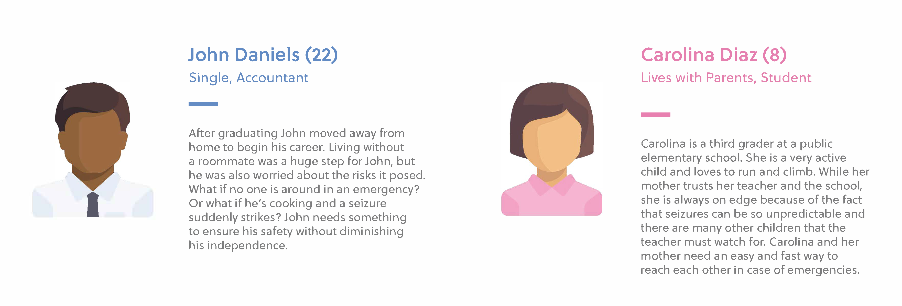
Research
Initial Research
The main method to observe brain activity during seizures is to use an EEG (electroencephalogram). This detects electrical activity in your brain using small, metal discs (electrodes) attached to your scalp which show up as wavy lines on an EEG recording. This test can only be administered by a technician and interpreted by a doctor which makes it impossible to use over a long period of time and outside of a hospital setting.
Types of seizure monitors include bed monitors which are placed on or under a bed to detect the movements of a seizure, video monitors which are similar to the technology commonly used for baby monitors, and wearable monitors which detect the user's movements at any time and can also alert for help.
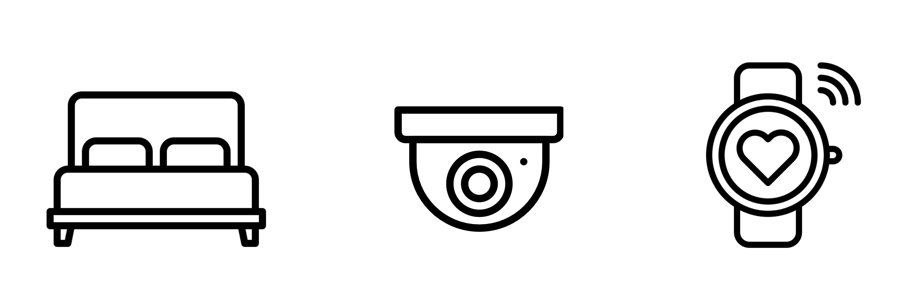
Competitive Analysis
Most seizure monitoring devices work with two components: an accessory and a control center. While there are many devices that are alerted after the fact and can contact help, there are no monitors that can detect and alert patients before a seizure occurs, simply because the technology to observe and track brain activity in a simple portable way does not currently exist.
Through my research, I found multiple products on the market targeted at helping track and detect seizures once they've occurred. Two are shown below: Empatica and SeizAlarm.
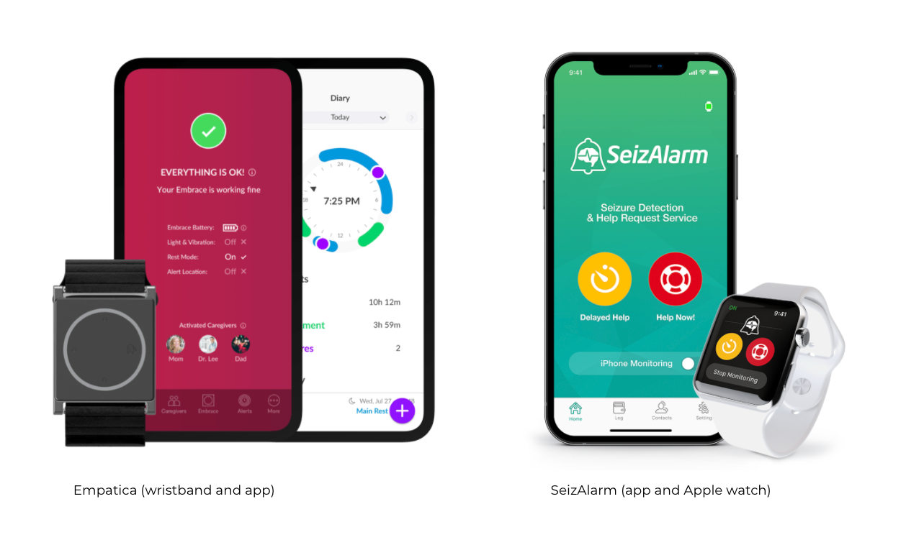
Ideation
Brainstorming
While roughly sketching the app interfaces, I was able to decide what screens and features from my initial brainstorm were valuable and what wasn't necessary. I was also able to determine the navigation as well as figure out a basic idea of how I wanted the UI and visual aesthetics of the app to look.
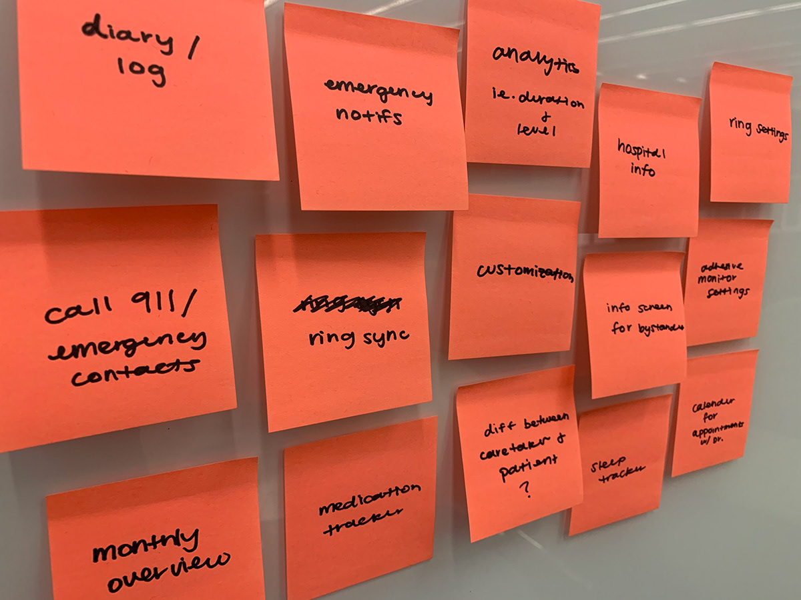
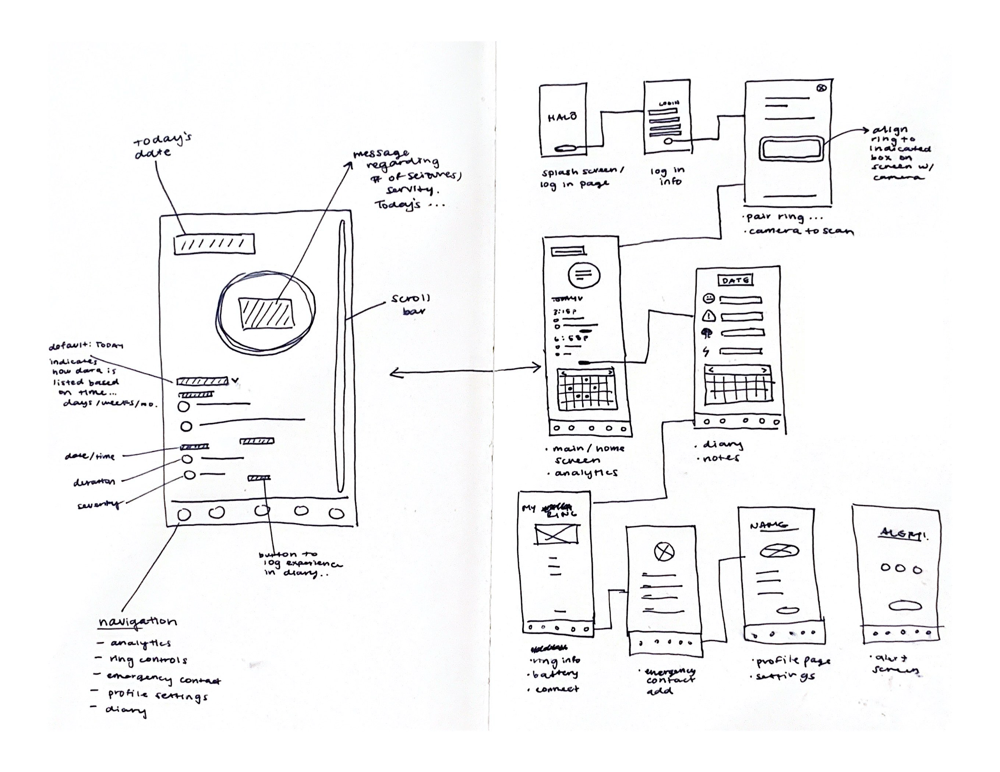
User Testing
After several iterations, I reached out to a couple of potential users and caretakers, including my friend and initial project partner. I asked them to go through my initial designs of the app and note features that they liked and things they felt were unnecessary or not self-explanatory. I made a summary of the feedback I received.
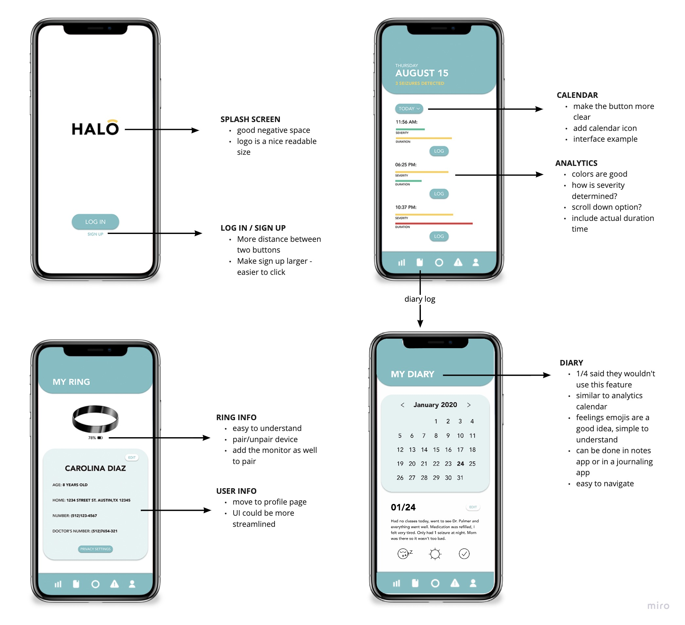
User Flow
From the user feedback, I adjusted my design and the app features to create my finalized app design. Below is the user flow I created to determine all the necessary screens and figure out the UX of the app.
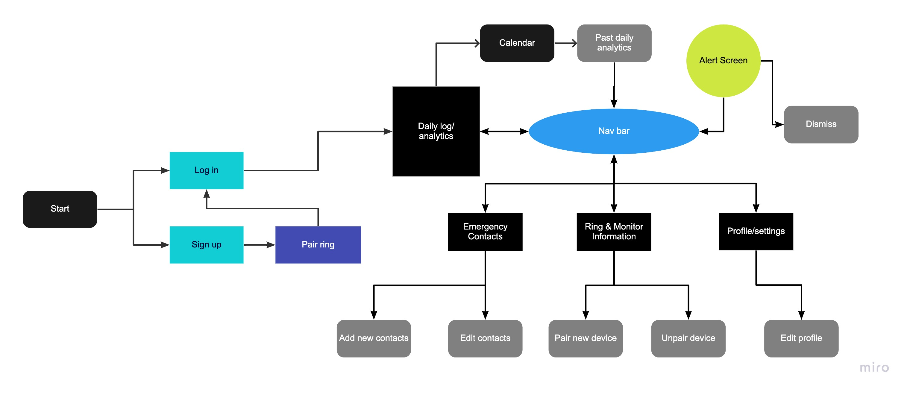
Solution
With the HALO: Seizure Monitoring and Early Alert System, people with epilepsy will be alerted before a seizure occurs and will be able to avoid any potential risks.
HALO is meant to be used as a non-abrupt early alert system for people with epilepsy, comprised of 3 parts: the adhesive monitor, the ring, and the mobile application.
The lightweight adhesive that sticks behind the user’s ear monitors the electrical signals generated by brain activity in order to detect a seizure before the physical signs occur. Once the monitor detects abnormal brain activity in the brain, it then connects to the HALO ring uses haptic technology to calmly alert the wearer in a non-abrupt manner so as to not be another epileptic trigger. The ring is discreet and comfortable, so as to not call attention or get in the way of the wearer’s daily life and activities.
After being alerted, the user is given a short amount of time to pause what they’re doing so that they can quickly get away from any potentially harmful situations.
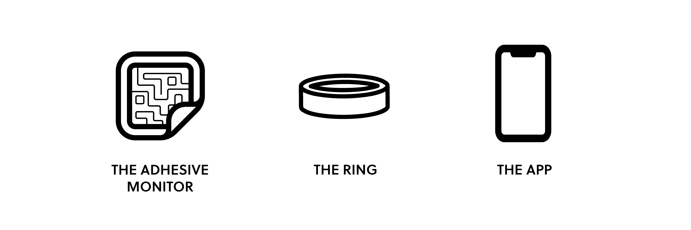
The Adhesive Monitor
The lightweight thin metal adhesive (electrode) sticks behind the user’s ear to monitor the electrical signals generated by brain activity, similar to an EEG, in order to detect a seizure before the physical signs occur.
Although typical EEG electrodes are placed all around the patient's head, the HALO adhesive monitor uses a single electrode, placed near the temporal lobe. This is important because the temporal lobe is located in a central part of the brain and since seizures can occur anywhere within the brain, the neurons can efficiently transfer information to it.
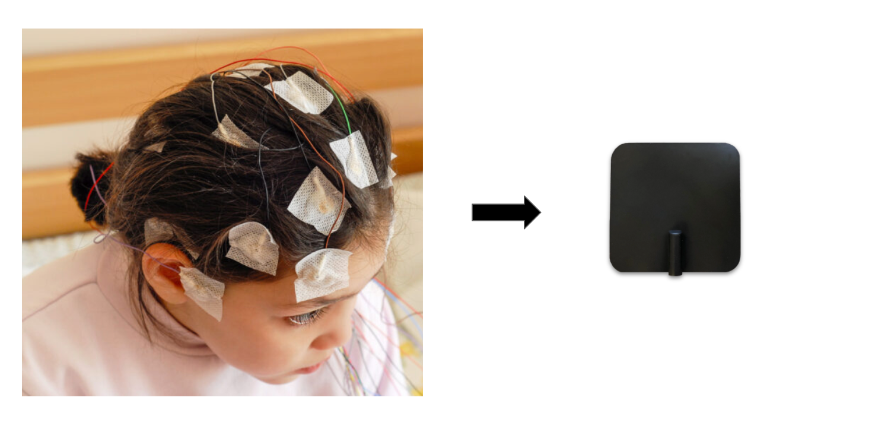
The Ring
Once the monitor detects abnormal activity in the brain, it then connects to the HALO ring and app using radio waves to transfer the information, similar to how Bluetooth devices connect. The ring then uses haptic technology to calmly alert the wearer in a non-abrupt manner so as to not be another epileptic trigger. The ring is discreet and comfortable, so as to not call attention or get in the way of the wearer’s daily life and activities.
After being alerted, the user is given a short amount of time to pause what they’re doing so that they can quickly get away from any potentially harmful situations.
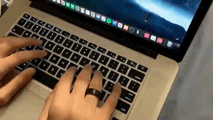
The Mobile Application
The app is used as a control center to store all the data and corresponding alert methods for HALO. It's meant to be universal and easy to use, no matter what age the user is. It is simple to understand, with minimal controls in order to maximize effectiveness.
My goal with the app was to create something that worked very simply with the other two devices (the adhesive monitor and the ring), while also accomplishing all the concerns and safety measures the user may want to use.

Hi-Fi Interfaces
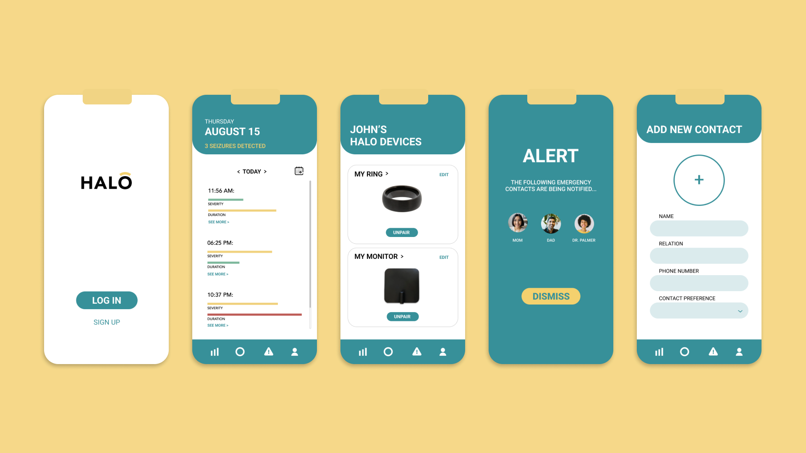
Brand Guidelines
After the user feedback I got, when creating the finalized brand identity for this project, I decided to make the colors more saturated and add more contrast in order to comply with ADA guidelines and make the app more accessible
to all users.
I also decided to flatten the design elements of the app, getting rid of shadows and other similar features to make the design more simplistic and appealing.
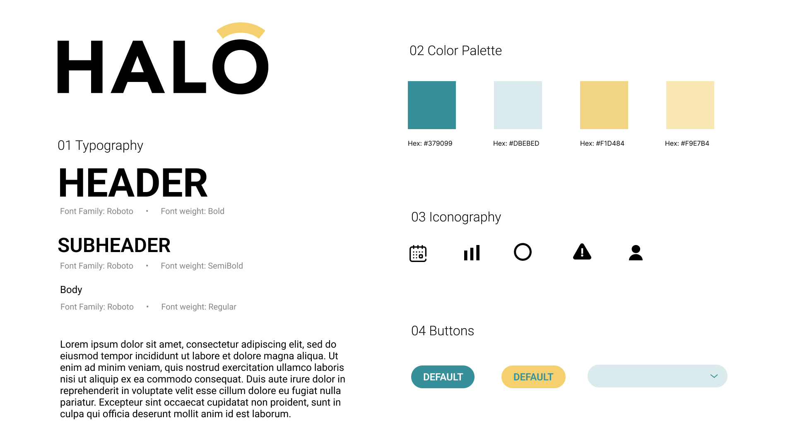
Takeaways
After completing this project, there are a few things I would like to revisit - mainly, ways to make the product more efficient.
Obviously the technology I designed is undeveloped and currently not possible to manufacture, so I can’t actually create and test it. However, I would love to eventually look back at the design to try and get some
new perspective on the idea overall and improve it to create a more efficient and thoughtful product, in the hopes that one day something like Halo will be possible and can benefit the millions of people who suffer from epilepsy
and seizures.